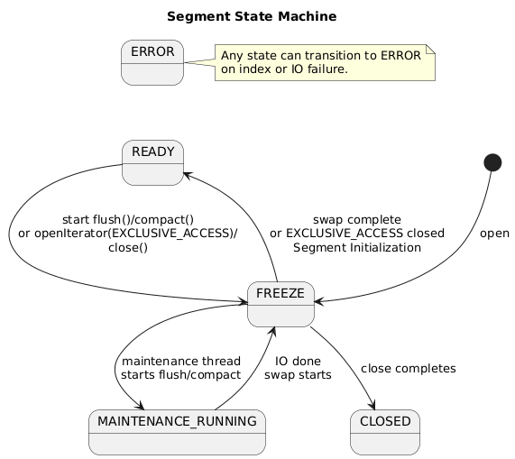

Concurrency & Lifecycle
Glossary
- Published view: immutable view of the main index, delta cache, bloom filter, and sparse index.
- Write cache: mutable map of recent writes not yet published.
- Segment version: monotonic epoch counter used by optimistic iterators.
- Maintenance thread: dedicated background thread for disk IO.
Segment operations
Please look at main operations supported by segment. Other operations are from thread-safety not interesting.
| Operation | Description |
|---|---|
Segment.builder(directory) |
Create a builder for constructing a segment with the provided directory. |
compact() |
Start compaction; returns once accepted. |
openIterator(isolation) |
Open an iterator with the requested isolation level. |
put(key, value) |
Write into the in-memory write cache. |
flush() |
Flush write cache to delta cache; returns once accepted. |
get(key) |
Perform a point lookup. |
getState() |
Return the current segment state. |
close() |
Start async close; transitions to CLOSED when finished. |
flush()andcompact()returnSegmentResult<Void>; completion is observed bygetState()returningREADY.close()returnsSegmentResult<Void>only; completion is observed viagetState().- Do not wait for
READYwhile running on the segment maintenance executor thread; this can deadlock the maintenance queue.
Response Codes
All method depending on segment state could replay with on of the follown codes:
| Code | Description |
|---|---|
OK |
Processed successfully or operation was accepted and scheduled; completion is observed when the segment returns to READY. |
BUSY |
Temporary refusal; retry makes sense. |
CLOSED |
Segment permanently unavailable. |
ERROR |
Unrecoverable. |
BUSY/CLOSED/ERRORmean the operation was not started.
Iterator Modes
Segmend can open iterator in following modes:
INTERRUPT_FAST(default): optimistic read; throws on version change. Reads a snapshot of the merged view captured at open time.STOP_FAST: optimistic read; stops on version change. Reads a snapshot of the merged view captured at open time.EXCLUSIVE_ACCESS: stop-the-world maintenance; blocks other operations and must be short. Reads a merged snapshot captured while the segment is frozen.
Segment States
Segment could be in one of following states. States:
READY: normal operation.MAINTENANCE_RUNNING: backgroundflush()orcompact()is executing.FREEZE: short exclusive phase for snapshot or swap.CLOSED: segment closed.ERROR: unrecoverable.
If an operation is not allowed in the current state, return BUSY in FREEZE or MAINTENANCE_RUNNING, CLOSED in CLOSED, and ERROR in ERROR.

Transitions
| Original State | New State | When |
|---|---|---|
READY |
FREEZE |
start of flush(), compact(), close or openIterator(EXCLUSIVE_ACCESS) |
FREEZE |
MAINTENANCE_RUNNING |
maintenance thread starts flush() or compact() |
MAINTENANCE_RUNNING |
FREEZE |
maintenance IO finished, swap to new files starts |
FREEZE |
READY |
swap complete or openIterator(EXCLUSIVE_ACCESS) closed |
| any | ERROR |
index or IO failure |
FREEZE |
CLOSED |
close() completes |
Optimistic locking
Core concept is that all data read via an iterator are immutable to the reader. When
flush() is called, iterators must stop to avoid serving a stale snapshot. This is
done via optimistic locking: when a segment iterator is opened it reads the segment
version, and before each read it verifies the version has not changed. If the version
changes, the iterator is interrupted. The version increments when a new immutable
view is published (after flush() or compact() swaps in new files) and when
EXCLUSIVE_ACCESS is acquired.
Iterator Isolation
optimistic locking allows distinguis following iteration modes:
- FAIL_FAST: optimistic read; any mutation can invalidate the iterator and terminate iteration early.
- FULL_ISOLATION: exclusive access for the iterator lifetime; blocks writes, flush/compact, and split on the same segment until closed.
Segment Behavior
Segment can be accessd from multiple threads in paraell. Segment
Operation Behavior Matrix
| Operation | Allowed states | Version bump | Iterator impact | Read write cache | Read delta cache | Notes |
|---|---|---|---|---|---|---|
put |
READY; MAINTENANCE_RUNNING (until cache full) |
No | None | N/A | N/A | Writes to write cache; in MAINTENANCE_RUNNING, returns BUSY if cache full. |
get |
READY, MAINTENANCE_RUNNING |
No | None | Yes | Yes | No read lock required. |
flush |
READY |
Yes (after publish) | Invalidates optimistic iterators | N/A | N/A | Serialized; concurrent request returns BUSY. May be triggered by full write cache. |
compact |
READY |
Yes (after publish) | Invalidates optimistic iterators | N/A | N/A | Serialized; concurrent request returns BUSY. May be triggered by full delta cache. |
openIterator(INTERRUPT_FAST) |
READY |
No | Throws on version change | Yes (snapshot) | Yes | Default mode. |
openIterator(STOP_FAST) |
READY |
No | Stops on version change | Yes (snapshot) | Yes | Snapshot captured at open time. |
openIterator(EXCLUSIVE_ACCESS) |
READY |
Yes (on lock acquisition) | Invalidates existing iterators; blocks others | Yes | Yes | Maintenance only; must be short. |
close |
READY |
No | Invalidates existing iterators; blocks others | N/A | N/A | Sets FREEZE, optionally flushes the write cache, schedules close on maintenance thread, then transitions to CLOSED. |
Flush/Compact Lifecycle
- Caller enters
FREEZE, drains in-flight ops, and prepares the maintenance plan (flush freezes the write cache; compact captures a snapshot). - Maintenance thread sets
MAINTENANCE_RUNNINGand performs IO. - When IO completes, state returns to
FREEZEand new index/delta files are swapped in. - Version increments immediately after the swap (publication).
- State becomes
READY. - Concurrent
flush()/compact()requests returnBUSY.
Failure & Cancellation
- On
flush()orcompact()failure, the current maintenance task aborts and the segment moves toERROR(unless alreadyCLOSED). - If
close()is called during maintenance, the segment returnsBUSY. Retry after the segment returns toREADY.
Concepts
Core Rules
- Concurrent reads/writes are supported; published data is immutable to readers.
- No disk IO in caller threads; the maintenance thread performs disk IO.
- Keep locks short; the state machine is the admission control.
flush()andcompact()are commit points and are started asynchronously.Segmentis thread-safe by contract; callers may access it concurrently.FREEZEis a short exclusive phase used for snapshotting, publish swaps, or close admission.
Contracts and Guarantees
Atomic Publish Invariant
- Publication of a new immutable view is atomic: readers see either the old view or the new view, never a partial mix.
- The view swap and version increment are linearized; operations after the swap observe the new view.
FREEZE Prohibitions
- During
FREEZE, all external operations returnBUSY. - Only internal maintenance steps (snapshot and swap) run in this phase.
EXCLUSIVE_ACCESS Lifecycle
openIterator(EXCLUSIVE_ACCESS)is allowed only inREADY; otherwise it returnsBUSY.- On acquisition, the segment enters
FREEZEand increments the version. - While held, all other operations return
BUSY. The iterator must be closed to return toREADY.
BUSY Reasons
- Write cache full during
MAINTENANCE_RUNNING(backpressure). - Segment is in
FREEZE. MAINTENANCE_RUNNINGand the requested operation is not allowed.flush()/compact()already running.EXCLUSIVE_ACCESSheld or requested while notREADY.
Retry and Backpressure Guidance
- Treat
BUSYas transient; retry with backoff and jitter. - For write-cache full during
MAINTENANCE_RUNNING, retry writes after maintenance publishes a new view. - For maintenance or exclusive access, retry after the segment returns to
READY.
Automatic Maintenance Triggers
- If the delta cache becomes full, the segment schedules
compact(). - If the write cache becomes full, the segment schedules
flush(). - These triggers transition the segment out of
READY(intoFREEZE/MAINTENANCE_RUNNING) before refusing new writes.
Memory Visibility
- The published view is swapped under
FREEZE(exclusive); new reads see only the old or the new view, never a partial publish. - Version increments provide an ordering point for optimistic iterators.
Freshness vs Consistency
getreads from the write cache and published view (freshest data).- Iterators read a snapshot of the merged view (published + write cache) taken
at open time; later
put()calls are not visible. Iterators are invalidated only by version changes (publish orEXCLUSIVE_ACCESS).
Serialized State Transitions
- State transitions are serialized; only one transition is in flight at a time.
flush(),compact(), andEXCLUSIVE_ACCESSare mutually exclusive and linearized.
Implementation Details
Thread Safety Mechanisms
- Segment version is stored in
VersionController(anAtomicInteger). - The write cache uses a thread-safe map implementation.
SegmentConcurrencyGatetracks in-flight reads/writes and drains them duringFREEZE.
Maintenance Execution
SegmentMaintenanceService.startMaintenance(...)entersFREEZE, drains in-flight ops, builds work, then transitions toMAINTENANCE_RUNNINGand schedules the maintenance task.runMaintenance(...)executes IO work, returns toFREEZE, runs publish work, then returns toREADYand optionally runs theonReadycallback.- Failures call
gate.fail()unless the segment is alreadyCLOSED.
Versioning and Iterator Invalidation
SegmentWritePath.applyFrozenWriteCacheAfterFlush()merges frozen entries and bumps the version when a snapshot was applied.SegmentCompacter.publishCompaction(...)bumps the version after publish.SegmentCore.invalidateIterators()bumps the version for explicit invalidation or exclusive access.
Close Workflow
SegmentImpl.close()entersFREEZE, drains in-flight ops, freezes the write cache, and schedulesrunClose(...)on the maintenance executor.runClose(...)flushes frozen data (if any), closes the core, transitions toCLOSED, and releases the segment lock.
Components
- Segment: user-facing API (
put,get,openIterator,flush,compact) implemented bySegmentImpl. - SegmentImpl: owns
SegmentStateMachine, checks state, and delegates toSegmentCore. Schedules maintenance work on the provided executor. - SegmentCore: single-threaded core with caches, on-disk access, and version tracking.
- SegmentStateMachine: atomic lifecycle transitions (
READY→FREEZE→MAINTENANCE_RUNNING→READY). - SegmentCompacter: performs full rewrite compaction using
SegmentCore. - SegmentMaintenanceCoordinator (segmentindex): decides when to call
flush()/compact()after writes. - SegmentAsyncExecutor + executor (segmentindex): maintenance executor
provided to
SegmentImplviaSegmentRegistry. - SegmentAsyncSplitCoordinator / SegmentSplitCoordinator (segmentindex): schedule and perform segment splits.
Responsibilities
- SegmentImpl: gates operations with the state machine, schedules
maintenance on the executor, and reports status via
SegmentResult. - SegmentCore: executes single-threaded read/write/maintenance steps, manages caches and version updates, and performs no threading or state transitions.
Implementation Mapping
EXCLUSIVE_ACCESSin this document maps toSegmentIteratorIsolation.FULL_ISOLATIONin code.INTERRUPT_FAST/STOP_FASTmap toSegmentIteratorIsolation.FAIL_FAST.- State transitions are enforced by
SegmentStateMachineand executed inSegmentMaintenanceService.startMaintenance(...)andSegmentMaintenanceService.runMaintenance(...). - Maintenance scheduling lives in
SegmentMaintenanceCoordinatorand uses the executor fromSegmentRegistry(SegmentAsyncExecutor).
Future: MVCC
Currently unused. MVCC could support iterators that remain consistent across version changes, balancing deadlocks, performance, and memory.